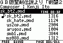
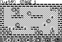

| アプリ名 |
説明＆Download |
最終更新日 |
ＭＭ音楽館 Ver.1.0
New!!
 |
P/ECE上でMMLデータを選択して演奏する、携帯MMLMusicプレイヤーです。
赤外線通信機能も備えています。
音楽データファイル以外も通信で扱えます。
ソースも公開しているので、何かの参考に使って頂ければ光栄です。
※カーネルのVer.1.18から赤外線通信の通信速度が変わったので、Ver.1.18以降専用です。
Ver.1.0で、Ver.0.9の売り文句だったMMC対応をMMC対応カーネルVer.1.28以降に任せることにしたので、以前の標準P/ECE用のものと統合しました。
統合したことで、Ver.0.9で改善した操作性そのままで、標準P/ECE・MMC改造P/ECEのどちらでも使えるハイブリッド(?)アプリに生まれ変わりました（＾＾
あと、ようやくRandomistさんの「ドラム音色分離キット」に対応しました。Randomistさん素晴らしいキットをありがとうございます。
これにより、MM音楽館Ver.1.0からは、ドラム音色分離キット内に含まれる"drum.arc"ファイルが必要になったので、「ドラム音色分離キット」のページからDLして下さい。
"drum.arc"をP/ECEの内蔵フラッシュメモリ内、もしくはMMC/SDカード内に置くことでドラムの音が鳴るようになります。
|
2005/04/24 |
バイナリ＆ソース
MMMHv10_2005_0424.zip
一応過去のも
MMMHv09_2004_1007.zip
MMMHv086.zip
|
しょうか Ver.0.5

|
ブロック移動型のパズルゲームです。
シンプルだけど奥が深い。そんなゲームを目指しました。
ソース付きです（＾＾；
|
2002/11/02 |
| syoukav05.zip |
MPPF形式の
fpk展開ツール |
P/ECE HandBook Vol.2付属の3大ゲーム（じゃんぴーすDX・れとるとまじっく・緋色の霧）で使用されているMPPF形式のfpkファイルを展開し、中のファイルを取り出します。
緋色の霧ではシナリオのスクリプトファイルが見えてしまいますので、ネタバレ注意（＾＾；
|
2004/05/21 |
| mppf_fpk_unpack_2004_0521.zip |